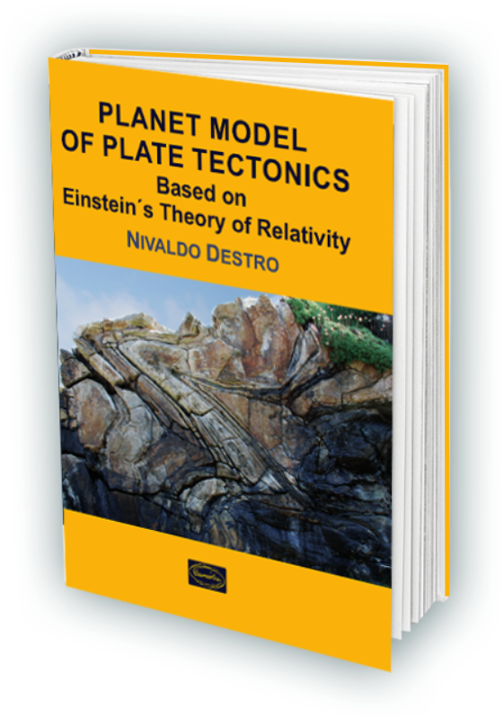

PLANET MODEL OF PLATE TECTONICS
Based on Einstein's Theory of Relativity
What is in the Book
The book contains a concise and objective account of plate tectonics based on Einstein´s Theory of Relativity. This book starts with a historical evolution of the physical concepts of space, time and inertia, which ends up being incorporated by the theories of special and general relativities. This is the cornerstone of the plate tectonics model herein presented and so called Planet Model, as it involves the inertial differential rotation of the inner and the outer cores, as well as all other major layers of Earth.
